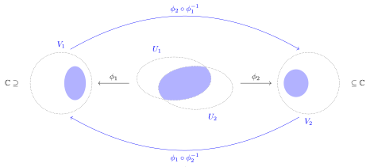
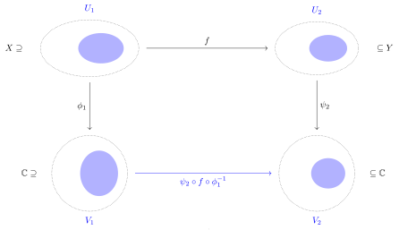
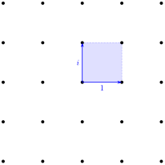
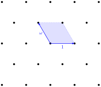
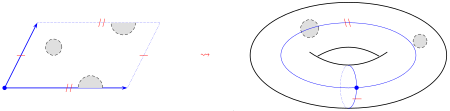
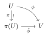
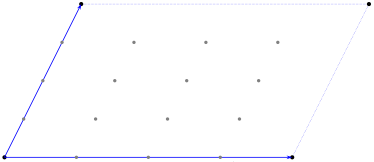
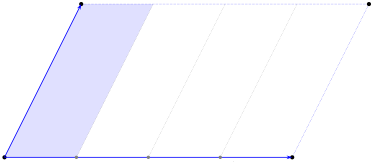
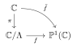
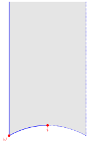

Chapter 1Elliptic curves as Riemann surfaces
The main goal of this chapter is to introduce the category of complex tori and to develop their theory from the complex analytic point of view. Students without previous experience in algebraic geometry can use it as a source of geometric intuition when we turn to the algebraic theory later on.
Situation 1.0.1. There is no ground field in this chapter: everything is complex analytic. Riemann surfaces are connected (Definition 1.1.2), and \(\Lambda\), \(\Lambda_1\), \(\Lambda_2\) denote lattices in \(\C\) (Definition 1.2.1).
1.1 Riemann surfaces
Intuitively, a Riemann surface is a topological space that looks like \(\C\) near each of its points. We make this intuition more precise.
Definition 1.1.1. Let \(X\) be a topological space.
- A chart in \(X\) is a homeomorphism \(\phi\colon U \to V\) between open subsets \(U \subseteq X\), \(V \subseteq \C\).
For any two charts \(\phi_1\) and \(\phi_2\) we obtain two transition maps
\begin{equation*} \phi_2 \circ \phi_1^{-1}\colon \phi_1(U_1 \cap U_2) \to \phi_2(U_1 \cap U_2), \qquad \phi_1 \circ \phi_2^{-1}\colon \phi_2(U_1 \cap U_2) \to \phi_1(U_1 \cap U_2). \end{equation*}- Two charts \(\phi_1\) and \(\phi_2\) are compatible if either \(U_1 \cap U_2 = \emptyset\), or the transition maps are holomorphic.
- A complex structure on \(X\) is a family \(\{\phi_i\}_i\) of compatible charts such that \(X = \bigcup_i U_i\).

A topological space is connected if it is not the union of two disjoint non-empty open subsets, and Hausdorff if any two distinct points of the space have disjoint open neighborhoods.
Definition 1.1.2. A Riemann surface is a connected Hausdorff topological space with a complex structure.
Recall that a topological space is second countable if it admits a countable basis for its topology. For Riemann surfaces this is automatic, by a theorem of Radó [For91, Theorem 23.3], but it is part of the definition of a manifold in general: the long line is connected, Hausdorff and locally homeomorphic to \(\R\), and not second countable.
The simplest examples are open subsets of \(\C\).
Example 1.1.3. Every connected open \(U \subseteq \C\) is a Riemann surface, with the complex structure consisting of the single chart \(\mathrm{id}\colon U \to U\).
More interestingly, the one-point compactification of \(\C\) is a Riemann surface.
Example 1.1.4. Define
\begin{equation*} \PP^1(\C) \coloneqq \bigl(\C^2 - \{(0,0)\}\bigr)/\C^\times, \end{equation*}with the quotient topology. This is the Riemann sphere, named after the sphere because it is isomorphic to the sphere \(S^2\) with the complex structure given by stereographic projection (Example 1.1.9). A point of \(\PP^1(\C)\) is a line through the origin:
\begin{equation*} (X_0 : X_1) \coloneqq \{(\lambda X_0, \lambda X_1) : \lambda \in \C^\times\}. \end{equation*}The subsets \(U_i \coloneqq \{(X_0 : X_1) \in \PP^1(\C) : X_i \neq 0\}\), for \(i = 0, 1\), are open, and \(\PP^1(\C) = U_0 \cup U_1\). The maps
\begin{equation*} \phi_0\colon U_0 \to \C, \quad (X_0 : X_1) \mapsto X_1/X_0, \qquad \phi_1\colon U_1 \to \C, \quad (X_0 : X_1) \mapsto X_0/X_1, \end{equation*}are homeomorphisms. They are compatible: \(\phi_0(U_0 \cap U_1) = \C^\times\), and on it
\begin{equation*} (\phi_1 \circ \phi_0^{-1})(w) = \phi_1(1 : w) = 1/w \end{equation*}is holomorphic. We identify \(\C\) with \(U_0\) via \(\phi_0\), and write \(\infty \coloneqq (0 : 1)\) for the one remaining point of \(\PP^1(\C)\).
We use charts to extend the notion of a holomorphic map between open subsets of \(\C\) to Riemann surfaces.
Definition 1.1.5. A holomorphic map of Riemann surfaces is a continuous function \(f\colon X \to Y\) such that for any two charts \(\phi_1\colon U_1 \to V_1\) of \(X\) and \(\psi_2\colon U_2 \to V_2\) of \(Y\) with \(U_1 \cap f^{-1}(U_2) \neq \emptyset\), the map
\begin{equation*} \psi_2 \circ f \circ \phi_1^{-1}\big|_{\phi_1(U_1 \cap f^{-1}(U_2))} \end{equation*}is holomorphic.
Figure 1.1.2 shows the maps in Definition 1.1.5.

Definition 1.1.6. An isomorphism of Riemann surfaces is a bijective holomorphic map with holomorphic inverse.
Example 1.1.7. The charts of a Riemann surface are isomorphisms onto their images.
Example 1.1.8. Let \(\bbH \coloneqq \{z \in \C : \Im(z) > 0\}\) denote the upper half plane, and \(\mathbb{D} \coloneqq \{z \in \C : \lvert z \rvert < 1\}\) the open unit disk. The map
\begin{equation*} \phi\colon \bbH \to \mathbb{D}, \qquad z \mapsto \frac{z - i}{z + i}, \end{equation*}is an isomorphism of Riemann surfaces.
Example 1.1.9. Let \(S^2 \coloneqq \{x \in \R^3 : x_1^2 + x_2^2 + x_3^2 = 1\}\) be the unit sphere, with north pole \(\mathbf{n} \coloneqq (0,0,1)\) and south pole \(\mathbf{s} \coloneqq (0,0,-1)\). The stereographic projections
\begin{equation*} \sigma_{\mathbf{n}}\colon S^2 - \{\mathbf{n}\} \to \C, \quad x \mapsto \frac{x_1 + ix_2}{1 - x_3}, \qquad \sigma_{\mathbf{s}}\colon S^2 - \{\mathbf{s}\} \to \C, \quad x \mapsto \frac{x_1 - ix_2}{1 + x_3}, \end{equation*}are homeomorphisms. Since \(x_1^2 + x_2^2 = 1 - x_3^2\), we have \(\sigma_{\mathbf{n}}(x)\sigma_{\mathbf{s}}(x) = 1\) for \(x \neq \mathbf{n}, \mathbf{s}\). So \(\sigma_{\mathbf{n}}(S^2 - \{\mathbf{n}, \mathbf{s}\}) = \C^\times\), and on it
\begin{equation*} (\sigma_{\mathbf{s}} \circ \sigma_{\mathbf{n}}^{-1})(w) = 1/w \end{equation*}is holomorphic. Thus \(\{\sigma_{\mathbf{n}}, \sigma_{\mathbf{s}}\}\) is a complex structure, and \(S^2\), a connected subspace of \(\R^3\), is a Riemann surface.
Define \(F\colon S^2 \to \PP^1(\C)\) by \(F(x) \coloneqq (1 : \sigma_{\mathbf{n}}(x))\) for \(x \neq \mathbf{n}\), and \(F(\mathbf{n}) \coloneqq \infty\). It is a bijection, since \(\sigma_{\mathbf{n}}\) is a bijection onto \(\C\) and \(U_0 = \PP^1(\C) - \{\infty\}\). In the charts of Example 1.1.4,
\begin{equation*} \phi_0 \circ F \circ \sigma_{\mathbf{n}}^{-1} = \mathrm{id}_\C, \qquad \phi_1 \circ F \circ \sigma_{\mathbf{s}}^{-1} = \mathrm{id}_\C, \end{equation*}the second because \(1/\sigma_{\mathbf{n}} = \sigma_{\mathbf{s}}\) away from \(\mathbf{n}\) and \(\mathbf{s}\), while \(\sigma_{\mathbf{s}}(\mathbf{n}) = 0 = \phi_1(\infty)\). Hence \(F\) and \(F^{-1}\) are holomorphic, and \(F\) is an isomorphism of Riemann surfaces.
Recall that a connected topological space \(X\) is simply connected if, for any base point \(x \in X\), the fundamental group \(\pi_{1}(X,x)\) is trivial. In other words, simply connected spaces are those in which any loop can be continuously deformed to a point within \(X\).
Theorem 1.1.10 (Uniformization theorem). Every simply connected Riemann surface is isomorphic to exactly one of \(\C\), \(\PP^1(\C)\), or \(\mathbb{D}\) [For91, Section 27].
So far, we have only seen examples of simply connected Riemann surfaces. One cheap way of ruining the simply connected property is by puncturing. Indeed, \(\C^\times\) is a Riemann surface by Example 1.1.3, and \(\pi_{1}(\C^{\times},1) \cong \Z\). We now turn to more interesting examples of surfaces that are not simply connected: donuts.
1.2 Complex tori
Definition 1.2.1. A lattice in \(\C\) is a subgroup \(\Lambda \subseteq \C\), free of rank 2, that spans \(\C\) as an \(\R\)-vector space.
By definition, every lattice \(\Lambda\) admits a \(\Z\)-basis that is also an \(\R\)-basis of \(\C\); that is, a pair of elements \(\omega_1, \omega_2 \in \C\) such that \(\Lambda = \Z\omega_1 \oplus \Z\omega_2\) and
\begin{equation*} \Lambda \otimes_\Z \R \cong \R\omega_1 \oplus \R\omega_2 = \C. \end{equation*}It follows that \(\Lambda\) is a discrete subset of \(\C\).
Example 1.2.2. \(\Lambda_i \coloneqq \Z \oplus i\Z\) is a lattice, the underlying group of the ring \(\Z[i]\) of Gaussian integers.
Example 1.2.3. \(\Lambda_\omega \coloneqq \Z \oplus \omega\Z\) for \(\omega = -\frac{1}{2} + \frac{\sqrt{-3}}{2}\) a primitive cube root of \(1\) is a lattice, the underlying group of the ring \(\Z[\omega]\) of Eisenstein integers.
Figure 1.2.1 shows both lattices.


Any lattice \(\Lambda \subseteq \C\) gives rise to a Riemann surface, namely the quotient group
\begin{equation*} \C/\Lambda \coloneqq \{z + \Lambda : z \in \C\} \end{equation*}with the quotient topology. We call \(\C/\Lambda\) a complex torus.

Lemma 1.2.4. \(\C/\Lambda\) is a compact Riemann surface.
Proof.
Consider the quotient map
\begin{equation*} \pi\colon \C \to \C/\Lambda. \end{equation*}It is continuous by the definition of the quotient topology, and open: for \(U \subseteq \C\) open, \(\pi^{-1}(\pi(U)) = \bigcup_{\lambda \in \Lambda} (U + \lambda)\) is open. Since \(\pi\) is continuous and surjective, \(\C/\Lambda\) is connected, as \(\C\) is. It is Hausdorff because \(\Lambda\) is discrete: if \(z - w \notin \Lambda\), choose \(\varepsilon > 0\) with \(\lvert z - w - \lambda \rvert > 2\varepsilon\) for every \(\lambda \in \Lambda\); then the images under \(\pi\) of the \(\varepsilon\)-disks around \(z\) and \(w\) are disjoint open neighborhoods of \(\pi(z)\) and \(\pi(w)\). Let \(\Lambda = \Z\omega_1 \oplus \Z\omega_2\), and consider the fundamental parallelogram
\begin{equation*} \calF_\Lambda \coloneqq \{t_1\omega_1 + t_2\omega_2 : 0 \leq t_1, t_2 < 1\}. \end{equation*}Its closure \(\overline{\calF_\Lambda}\) is compact, and \(\C/\Lambda = \pi(\overline{\calF_\Lambda})\), so \(\C/\Lambda\) is compact.
For the complex structure, note that no two distinct points of the open parallelogram \(\calF_\Lambda^\circ\) differ by an element of \(\Lambda\), so \(\pi\) restricts to a homeomorphism from \(\calF_\Lambda^\circ\) onto its image, and likewise on every translate \(z + \calF_\Lambda^\circ\). Hence every chart \(\phi\colon U \to V\) with \(U \subseteq z + \calF_\Lambda^\circ\) descends to a chart \(\tilde\phi\colon \pi(U) \to V\) with \(\tilde\phi \circ \pi = \phi\) on \(U\).

The translates \(\pi(z + \calF_\Lambda^\circ)\) cover \(\C/\Lambda\): translating is needed to reach the image of the boundary of the parallelogram. Two such charts are compatible because, on the overlap, \((\pi|_{U_2})^{-1} \circ \pi|_{U_1}\) sends \(u\) to \(u + \lambda\) with \(\lambda \in \Lambda\) depending continuously on \(u\), hence locally constant; so the transition maps are locally \(\phi_2 \circ (u \mapsto u + \lambda) \circ \phi_1^{-1}\), which are holomorphic.
Draft1.3 Isogenies
A complex torus is both a Riemann surface and an abelian group. Holomorphic maps between complex tori are affine linear, and those respecting the group structure are linear.
Proposition 1.3.1. Suppose \(\varphi\colon \C/\Lambda_1 \to \C/\Lambda_2\) is holomorphic. Then there exist \(\alpha, \beta \in \C\) with \(\alpha\Lambda_1 \subseteq \Lambda_2\) such that
\begin{equation*} \varphi(z + \Lambda_1) = \alpha z + \beta + \Lambda_2 \end{equation*}for every \(z \in \C\). The map \(\varphi\) is an isomorphism if and only if \(\alpha\Lambda_1 = \Lambda_2\).
Proof.
Let \(\pi_j\colon \C \to \C/\Lambda_j\) be the quotient maps. Since \(\C\) is simply connected and \(\pi_2\) is a covering map, \(\varphi \circ \pi_1\) lifts to a continuous map \(\tilde\varphi\colon \C \to \C\) with \(\pi_2 \circ \tilde\varphi = \varphi \circ \pi_1\). As \(\pi_2\) is a local isomorphism, \(\tilde\varphi\) is holomorphic. For any \(\lambda \in \Lambda_1\) we have \(\tilde\varphi(z + \lambda) + \Lambda_2 = \tilde\varphi(z) + \Lambda_2\). In other words, the function
\begin{equation*} f_\lambda(z) \coloneqq \tilde\varphi(z + \lambda) - \tilde\varphi(z) \end{equation*}takes values in \(\Lambda_2\), which is discrete. Since \(f_\lambda\) is continuous and \(\C\) is connected, \(f_\lambda\) is constant, so \(f_\lambda' = 0\), that is, \(\tilde\varphi'(z + \lambda) = \tilde\varphi'(z)\) for every \(z \in \C\). So \(\tilde\varphi'\) is \(\Lambda_1\)-periodic; it is therefore determined by its values on the compact set \(\overline{\calF_{\Lambda_1}}\) from the proof of Lemma 1.2.4, hence bounded. By Liouville's theorem, \(\tilde\varphi' = \alpha\) is constant, so \(\tilde\varphi(z) = \alpha z + \beta\). Moreover \(\alpha\lambda = f_\lambda(z) \in \Lambda_2\) for every \(\lambda \in \Lambda_1\), that is, \(\alpha\Lambda_1 \subseteq \Lambda_2\).
If \(\alpha = 0\), then \(\varphi\) is constant, so not injective. If \(\alpha \neq 0\) and \(\alpha\Lambda_1 \subsetneq \Lambda_2\), pick \(w \in \Lambda_2 - \alpha\Lambda_1\). Then \(w/\alpha \notin \Lambda_1\), and \(\varphi(w/\alpha + \Lambda_1) = w + \beta + \Lambda_2 = \beta + \Lambda_2 = \varphi(0 + \Lambda_1)\), so \(\varphi\) is not injective. If \(\alpha\Lambda_1 = \Lambda_2\), then \(\psi(z + \Lambda_2) \coloneqq \frac{1}{\alpha}(z - \beta) + \Lambda_1\) is a well defined holomorphic inverse of \(\varphi\).
Corollary 1.3.2. A map \(\varphi\colon \C/\Lambda_1 \to \C/\Lambda_2\) is a holomorphic group homomorphism if and only if \(\varphi(z + \Lambda_1) = \alpha z + \Lambda_2\) for some \(\alpha \in \C\) with \(\alpha\Lambda_1 \subseteq \Lambda_2\).
Proof.
In Proposition 1.3.1, \(\varphi\) is a homomorphism if and only if \(\varphi(0 + \Lambda_1) = 0 + \Lambda_2\), that is, \(\beta \in \Lambda_2\).
Definition 1.3.3. An isogeny is a non-zero holomorphic homomorphism between complex tori. An isomorphism of complex tori is an invertible isogeny.
Example 1.3.4. Let \(\Lambda\) be any lattice, and let \(m \geq 1\). Then \(m \Lambda \subseteq \Lambda\), and the multiplication by \(m\) map
\begin{equation*} [m]\colon \C/\Lambda \to \C/\Lambda, \qquad z + \Lambda \mapsto mz + \Lambda \end{equation*}is an isogeny. Its kernel is the \(m\)-torsion subgroup of \(\C/\Lambda\),
\begin{equation*} (\C/\Lambda)[m] \coloneqq \{z + \Lambda : mz \in \Lambda\} = \tfrac{1}{m}\Lambda/\Lambda \cong (\Z/m\Z)^2. \end{equation*}Figure 1.3.1 shows the \(4\)-torsion points in the fundamental parallelogram. This is the analogue, one dimension up, of the \(m\)-torsion subgroup of the circle
\begin{equation*} \R/\Z \cong \{z \in \C : \lvert z \rvert = 1\} \cong \C^\times/\R_{>0}, \end{equation*}which is \(\frac{1}{m}\Z/\Z \cong \Z/m\Z\), identified via \(t \mapsto e^{2\pi i t}\) with the group of complex \(m\)-th roots of unity
\begin{equation*} \mu_m(\C) \coloneqq \{z \in \C : z^m = 1\}. \end{equation*}
Example 1.3.5. Let \(\Lambda = \Z\omega_1 \oplus \Z\omega_2\) be a lattice, and let \(N \geq 1\). The lattice \(\Lambda' \coloneqq \Z\tfrac{\omega_1}{N} \oplus \Z\omega_2\) contains \(\Lambda\), and \(\Lambda'/\Lambda \cong \Z/N\Z\) is generated by \(\tfrac{\omega_1}{N} + \Lambda\). By Corollary 1.3.2 with \(\alpha = 1\), the map
\begin{equation*} \varphi\colon \C/\Lambda \to \C/\Lambda', \qquad z + \Lambda \mapsto z + \Lambda' \end{equation*}is an isogeny. Its kernel \(\Lambda'/\Lambda\) is a cyclic subgroup of order \(N\) of \((\C/\Lambda)[N]\), so \(\varphi\) is a cyclic isogeny. Figure 1.3.2 shows the case \(N = 4\). Conversely, every cyclic subgroup \(C \subseteq \C/\Lambda\) of order \(N\) is the kernel of such an isogeny: take \(\Lambda' \coloneqq \pi^{-1}(C)\), where \(\pi\colon \C \to \C/\Lambda\) is the quotient map.
Since \(N\Lambda' = \Z\omega_1 \oplus \Z N\omega_2 \subseteq \Lambda\), multiplication by \(N\) also defines an isogeny \(\hat\varphi\colon \C/\Lambda' \to \C/\Lambda\), \(z + \Lambda' \mapsto Nz + \Lambda\). Both composites \(\hat\varphi \circ \varphi\) and \(\varphi \circ \hat\varphi\) are multiplication by \(N\) (Example 1.3.4).

In Example 1.3.5 the isogeny \(\varphi\) has a partner \(\hat\varphi\) going the other way, and both composites are multiplication by the order of the kernel. Every isogeny has such a partner. For a lattice \(\Lambda\), write \(\operatorname{area}(\Lambda)\) for the area of the fundamental parallelogram \(\calF_\Lambda\) from the proof of Lemma 1.2.4. It does not depend on the basis, since a change of basis has determinant \(\pm 1\).
Lemma 1.3.6. Let \(\varphi\colon \C/\Lambda_1 \to \C/\Lambda_2\), \(z + \Lambda_1 \mapsto \alpha z + \Lambda_2\), be an isogeny. Then \(\ker\varphi = \alpha^{-1}\Lambda_2/\Lambda_1\) is finite, and
\begin{equation*} \#\ker\varphi = [\Lambda_2 : \alpha\Lambda_1] = \lvert\alpha\rvert^2\,\frac{\operatorname{area}(\Lambda_1)}{\operatorname{area}(\Lambda_2)}. \end{equation*}Proof.
We have \(z + \Lambda_1 \in \ker\varphi\) if and only if \(\alpha z \in \Lambda_2\), that is, \(z \in \alpha^{-1}\Lambda_2\). Since \(\varphi \neq 0\), \(\alpha \neq 0\), and multiplication by \(\alpha\) is a group isomorphism \(\alpha^{-1}\Lambda_2/\Lambda_1 \to \Lambda_2/\alpha\Lambda_1\). Now \(\alpha\Lambda_1 \subseteq \Lambda_2\) are both lattices. For lattices \(\Lambda' \subseteq \Lambda\), write a basis of \(\Lambda'\) in terms of a basis of \(\Lambda\) by a matrix \(M \in \mathrm{M}_2(\Z)\) with \(\det M \neq 0\). By the Smith normal form, \([\Lambda : \Lambda'] = \lvert\det M\rvert\), and the \(\R\)-linear map of \(\C\) taking the one basis to the other scales areas by \(\lvert\det M\rvert\); so \([\Lambda : \Lambda'] = \operatorname{area}(\Lambda')/\operatorname{area}(\Lambda)\). Finally, \(z \mapsto \alpha z\) is \(\R\)-linear with determinant \(\lvert\alpha\rvert^2\), so \(\operatorname{area}(\alpha\Lambda_1) = \lvert\alpha\rvert^2 \operatorname{area}(\Lambda_1)\).
Definition 1.3.7. The degree of an isogeny \(\varphi\) of complex tori is \(\deg\varphi \coloneqq \#\ker\varphi\).
For instance, \(\deg[m] = m^2\) by Example 1.3.4, the cyclic isogeny of Example 1.3.5 has degree \(N\), and by Proposition 1.3.1 the isogenies of degree \(1\) are exactly the isomorphisms. If \(\lambda\colon \C/\Lambda_2 \to \C/\Lambda_3\) is another isogeny, given by \(z \mapsto \beta z\), then \(\lambda \circ \varphi\) is given by \(z \mapsto \beta\alpha z\), and the area formula of Lemma 1.3.6 gives \(\deg(\lambda \circ \varphi) = \deg\lambda \cdot \deg\varphi\). The scalar \(\alpha\) is determined by \(\varphi\): if \(\alpha z - \alpha' z \in \Lambda_2\) for every \(z \in \C\), then \(\alpha - \alpha' = 0\), because a continuous map from \(\C\) to the discrete set \(\Lambda_2\) is constant.
Theorem 1.3.8. Let \(\varphi\colon \C/\Lambda_1 \to \C/\Lambda_2\), \(z + \Lambda_1 \mapsto \alpha z + \Lambda_2\), be an isogeny of degree \(d\).
- There is a unique isogeny \(\hat\varphi\colon \C/\Lambda_2 \to \C/\Lambda_1\), the dual isogeny, with \(\hat\varphi \circ \varphi = [d]\). It is \(\hat\varphi(z + \Lambda_2) = \frac{d}{\alpha} z + \Lambda_1\).
- \(\varphi \circ \hat\varphi = [d]\) on \(\C/\Lambda_2\).
- \(\widehat{\lambda \circ \varphi} = \hat\varphi \circ \hat\lambda\) for an isogeny \(\lambda\colon \C/\Lambda_2 \to \C/\Lambda_3\).
- \(\widehat{\varphi + \psi} = \hat\varphi + \hat\psi\) for an isogeny \(\psi\colon \C/\Lambda_1 \to \C/\Lambda_2\) with \(\varphi + \psi \neq 0\).
- \(\widehat{[m]} = [m]\) for all \(m \geq 1\).
- \(\deg\hat\varphi = \deg\varphi\) and \(\hat{\hat\varphi} = \varphi\).
Proof.
By Lemma 1.3.6, \(\Lambda_2/\alpha\Lambda_1\) is a group of order \(d\), so it is killed by \(d\): \(d\Lambda_2 \subseteq \alpha\Lambda_1\), that is, \(\frac{d}{\alpha}\Lambda_2 \subseteq \Lambda_1\). By Corollary 1.3.2, \(\hat\varphi\) is an isogeny, and \(\hat\varphi \circ \varphi\) is \(z \mapsto dz\), which is \([d]\). Composition of isogenies multiplies their scalars, and the scalar determines the isogeny, so an isogeny \(z \mapsto \gamma z\) with this property has \(\gamma\alpha = d\). This proves part 1, and part 2 follows from \(\alpha \cdot \frac{d}{\alpha} = d\).
The rest is arithmetic with scalars. Set \(c \coloneqq \operatorname{area}(\Lambda_1)/\operatorname{area}(\Lambda_2)\). By Lemma 1.3.6, \(d = c\lvert\alpha\rvert^2\), so
\begin{equation*} \frac{d}{\alpha} = c\,\bar\alpha. \end{equation*}For part 3, let \(\lambda\) be given by \(z \mapsto \beta z\), of degree \(d'\). Then \(\lambda \circ \varphi\) has scalar \(\beta\alpha\) and degree \(dd'\), so its dual has scalar \(\frac{dd'}{\beta\alpha} = \frac{d}{\alpha} \cdot \frac{d'}{\beta}\), which is the scalar of \(\hat\varphi \circ \hat\lambda\). For part 4, let \(\psi\) be given by \(z \mapsto \beta z\). Then \(\varphi + \psi\) has scalar \(\alpha + \beta\), and since \(c\) depends only on \(\Lambda_1\) and \(\Lambda_2\), its dual has scalar \(c\,\overline{(\alpha + \beta)} = c\,\bar\alpha + c\,\bar\beta\). For part 5, \([m]\) has scalar \(m\) and degree \(m^2\), so its dual has scalar \(m^2/m = m\). For part 6, Lemma 1.3.6 gives \(\deg\hat\varphi = \lvert d/\alpha\rvert^2 / c = d^2/d = d\), and so the dual of \(\hat\varphi\) has scalar \(d/(d/\alpha) = \alpha\).
In Example 1.3.5, \(\alpha = 1\) and \(d = N\), so the isogeny \(\hat\varphi\) there is the dual of \(\varphi\). The kernel of the dual is
\begin{equation*} \ker\hat\varphi = \tfrac{\alpha}{d}\Lambda_1/\Lambda_2 = \varphi\bigl((\C/\Lambda_1)[d]\bigr), \end{equation*}since \((\C/\Lambda_1)[d] = \frac{1}{d}\Lambda_1/\Lambda_1\). The formula \(d/\alpha = c\,\bar\alpha\) says that, up to the positive constant \(c\), taking the dual is complex conjugation of the scalar. In particular, if we allow the zero map and set \(\deg 0 \coloneqq 0\), then \(\varphi \mapsto \deg\varphi = c\lvert\alpha\rvert^2\) is a positive definite quadratic form on the group of holomorphic homomorphisms \(\C/\Lambda_1 \to \C/\Lambda_2\). For an endomorphism of \(\C/\Lambda\) we have \(c = 1\), so the dual is \(\bar\alpha\) and the degree is \(\lvert\alpha\rvert^2\). These statements return for elliptic curves over an arbitrary field in Theorem 4.3.10 and Corollary 4.3.11, where there is no scalar to conjugate and the proofs are harder.
Example 1.3.9. Let \(\Lambda_\omega = \Z \oplus \omega\Z\) be the lattice of Example 1.2.3. Since \(\Z[\omega]\) is a ring, \(\alpha\Lambda_\omega \subseteq \Lambda_\omega\) for every \(\alpha \in \Z[\omega]\), and \(z \mapsto \alpha z\) is an endomorphism of degree \(\lvert\alpha\rvert^2\) with dual \(z \mapsto \bar\alpha z\).
- For \(\alpha = \omega\), the degree is \(1\), so \(z \mapsto \omega z\) is an automorphism, and its dual \(z \mapsto \bar\omega z = \omega^2 z\) is its inverse.
- For \(\alpha = 1 - \omega\), the degree is \(\lvert 1 - \omega\rvert^2 = 3\), and the dual is \(z \mapsto (1 - \omega^2)z\); indeed \((1 - \omega)(1 - \omega^2) = 3\). The kernel is cyclic of order \(3\), generated by \(\frac{1}{1 - \omega} + \Lambda_\omega = \frac{2 + \omega}{3} + \Lambda_\omega\).
Compare part 3 of Proposition 4.8.11, where the same identity appears for the curves \(C_d\). Similarly, on \(\C/\Lambda_i\) the endomorphism \(z \mapsto (1 + i)z\) has degree \(2\) and dual \(z \mapsto (1 - i)z\).
Draft1.4 Meromorphic functions
Definition 1.4.1. Let \(X\) be a Riemann surface. A meromorphic function on \(X\) is a holomorphic map \(X \to \PP^1(\C)\) that is not identically \(\infty\). Denote the set of meromorphic functions on \(X\) by \(\C(X)\).
Equivalently, a meromorphic function is a function \(f\) with values in \(\C\), defined and holomorphic away from a discrete set of points of \(X\), at each of which \(f\) has a pole; there we set \(f = \infty\) [Mir95, Proposition II.3.13].
Example 1.4.2. Let \(F_0, F_1 \in \C[X_0, X_1]\) be homogeneous polynomials of equal degree with no common zero on \(\PP^1(\C)\), and \(F_0 \neq 0\). Then the map
\begin{equation*} F\colon \PP^1(\C) \to \PP^1(\C), \qquad (X_0 : X_1) \mapsto (F_0 : F_1) \end{equation*}is a meromorphic function. Moreover, every meromorphic function on \(\PP^1(\C)\) is of this form.
Example 1.4.3. Let \(\Lambda \subseteq \C\) be a lattice. Then there is a bijective correspondence between
- meromorphic functions on \(\C/\Lambda\), and
- \(\Lambda\)-periodic meromorphic functions on \(\C\),
given by \(f \mapsto \tilde f \coloneqq f \circ \pi\).

Given \(f, g \in \C(X)\), let \(S \subseteq X\) be the set of poles of \(f\) or \(g\). It is discrete [Mir95, Theorem II.1.33], and on \(X - S\) the pointwise sum \(f + g\) and product \(fg\) are holomorphic. At each point of \(S\) they have either a removable singularity or a pole [Mir95, Example II.1.17]; filling in the removable singularities and setting the value \(\infty\) at the poles defines \(f + g, fg \in \C(X)\). The constant maps \(0, 1 \in \C(X)\) serve as additive and multiplicative identities, respectively.
Lemma 1.4.4. Let \(X\) be a Riemann surface. With the operations defined above, the set \(\C(X)\) of meromorphic functions on \(X\) is a field.
Draft1.5 Invariant differentials
On an open subset of \(\C\) we can write down differentials \(f(z)\,dz\). A Riemann surface has no global coordinate \(z\), so we write a differential in every chart and ask that the expressions agree under the chain rule [Mir95, Section IV.1].
Definition 1.5.1. Let \(X\) be a Riemann surface. A meromorphic differential \(\omega\) on \(X\) assigns to every chart \(\phi\colon U \to V\) of \(X\) a meromorphic function \(f_\phi\) on \(V\), written \(\omega = f_\phi(z)\,dz\), such that for any two charts \(\phi_1\) and \(\phi_2\), with transition map \(T \coloneqq \phi_2 \circ \phi_1^{-1}\),
\begin{equation*} f_{\phi_1}(z) = f_{\phi_2}\bigl(T(z)\bigr)\,T'(z) \qquad \text{for } z \in \phi_1(U_1 \cap U_2). \end{equation*}If every \(f_\phi\) is holomorphic, then \(\omega\) is a holomorphic differential.
By the chain rule, it is enough to give functions \(f_\phi\) satisfying the transformation rule for the charts of a single complex structure on \(X\); they extend uniquely to all charts. Since \(T'\) does not vanish, whether \(f_\phi\) has a zero or a pole at \(\phi(p)\) depends only on \(p\), so a non-zero meromorphic differential has a discrete set of zeros and poles. If \(\eta \neq 0\) is a meromorphic differential, then the quotients \(f_\phi/h_\phi\), where \(\eta = h_\phi(z)\,dz\), glue to a meromorphic function, because the factors \(T'\) cancel. So every meromorphic differential is \(g\eta\) for a unique \(g \in \C(X)\).
Differentials pull back along holomorphic maps. Let \(F\colon X \to Y\) be a non-constant holomorphic map and \(\omega\) a meromorphic differential on \(Y\). For charts \(\phi\colon U \to V\) of \(X\) and \(\psi\colon U' \to V'\) of \(Y\) with \(F(U) \subseteq U'\), write \(F_{\psi\phi} \coloneqq \psi \circ F \circ \phi^{-1}\) and \(\omega = f_\psi(w)\,dw\), and set
\begin{equation*} F^*\omega \coloneqq f_\psi\bigl(F_{\psi\phi}(z)\bigr)\,F_{\psi\phi}'(z)\,dz. \end{equation*}Such charts \(\phi\) cover \(X\), and the chain rule shows that \(F^*\omega\) is a meromorphic differential on \(X\). If \(\omega\) is holomorphic, the same formula makes sense for constant \(F\), and gives \(F^*\omega = 0\). Pullback satisfies \((G \circ F)^* = F^* \circ G^*\) and \(F^*(g\omega) = (g \circ F)\,F^*\omega\) for \(g \in \C(Y)\). For instance, if \(F\) is a map between open subsets of \(\C\), then \(F^*(dw) = F'(z)\,dz\), which is the familiar substitution \(w = F(z)\).
The Riemann surfaces \(\C^\times\) and \(\C/\Lambda\) are also abelian groups, and for every element \(a\) the translation \(\tau_a\), namely \(z \mapsto az\) on \(\C^\times\) and \(z + \Lambda \mapsto z + a + \Lambda\) on \(\C/\Lambda\), is an isomorphism of Riemann surfaces.
Definition 1.5.2. Let \(G\) be \(\C^\times\) or a complex torus. A meromorphic differential \(\omega\) on \(G\) is invariant if \(\tau_a^*\omega = \omega\) for every \(a \in G\).
Lemma 1.5.3. Let \(G\) be \(\C^\times\) or a complex torus, and let \(\eta\) be a non-zero invariant differential on \(G\). Then \(\eta\) has no zeros or poles, and every invariant differential on \(G\) is \(c\eta\) for a unique \(c \in \C\).
Proof.
Since \(\tau_a^*\eta = \eta\), a point \(p\) of \(G\) is a zero of \(\eta\) if and only if \(\tau_a(p)\) is, and likewise for poles. The translations act transitively on \(G\), so if \(\eta\) had a zero or a pole it would have one everywhere, contradicting discreteness. Let \(\omega\) be invariant, and write \(\omega = g\eta\) with \(g \in \C(G)\). Then
\begin{equation*} g\eta = \omega = \tau_a^*\omega = (g \circ \tau_a)\,\tau_a^*\eta = (g \circ \tau_a)\,\eta, \end{equation*}so \(g \circ \tau_a = g\) for every \(a \in G\). Hence \(g\) is constant, and its value \(c \neq \infty\), since \(g\) is not identically \(\infty\).
Example 1.5.4. On \(\C^\times\), with its single chart \(\mathrm{id}\), consider the holomorphic differential
\begin{equation*} \omega \coloneqq \frac{dz}{z}. \end{equation*}For \(a \in \C^\times\), the translation \(\tau_a(z) = az\) gives
\begin{equation*} \tau_a^*\omega = \frac{a\,dz}{az} = \frac{dz}{z} = \omega, \end{equation*}so \(\omega\) is invariant, and by Lemma 1.5.3 every invariant differential on \(\C^\times\) is a multiple of \(dz/z\). By contrast, \(dz\) is also a holomorphic differential on \(\C^\times\), but \(\tau_a^*dz = a\,dz\), so it is not invariant. The holomorphic differentials \(f(z)\,dz\), with \(f\) holomorphic on \(\C^\times\), form an infinite-dimensional space; only a line of them is invariant.
Endomorphisms. For \(m \in \Z\), the map \([m]\colon z \mapsto z^m\) is a holomorphic group homomorphism \(\C^\times \to \C^\times\), with kernel \(\mu_m(\C)\) when \(m \neq 0\) (Example 1.3.4). It pulls \(\omega\) back to
\begin{equation*} [m]^*\omega = \frac{mz^{m-1}\,dz}{z^m} = m\,\frac{dz}{z} = m\omega. \end{equation*}Uniformization. The exponential \(\exp\colon \C \to \C^\times\) is a surjective holomorphic homomorphism with kernel \(2\pi i\Z\), so it induces an isomorphism \(\C/2\pi i\Z \cong \C^\times\) of Riemann surfaces and of groups. In the coordinate \(w\) on \(\C\),
\begin{equation*} \exp^*\omega = \frac{e^w\,dw}{e^w} = dw, \end{equation*}so the invariant differential on \(\C^\times\) corresponds to the translation-invariant differential \(dw\) on \(\C\).
- Periods. If \(\gamma\) is a loop in \(\C^\times\), then \(\int_\gamma dz/z\) is \(2\pi i\) times the winding number of \(\gamma\) around \(0\). So the set of \(\int_\gamma \omega\), as \(\gamma\) runs over loops, is \(2\pi i\Z\), the kernel of \(\exp\), and it is generated by the integral over the unit circle, the image of the segment from \(0\) to \(2\pi i\). The inverse of the isomorphism in part 2 is \(z \mapsto \int_1^z \omega \bmod 2\pi i\Z\), the logarithm, which is well defined modulo \(2\pi i\Z\).
- At \(0\) and \(\infty\). In the chart \(\phi_1\) of Example 1.1.4, with coordinate \(u = 1/z\), the transformation rule gives \(\omega = -du/u\). So \(\omega\) is a meromorphic differential on \(\PP^1(\C)\) with simple poles at \(0\) and \(\infty\). Unlike \(dz\) on \(\C/\Lambda\) below, it does not extend to a holomorphic differential on this compactification.
Algebraically, \(\C^\times\) is the group of complex points of the multiplicative group \(\Gm\) (Example 2.1.6), and \(\omega\) is \(dx/x\); see Examples 3.4.7 and 3.4.8 for the algebraic version over an arbitrary field.
Example 1.5.5. Let \(\Lambda \subseteq \C\) be a lattice, and \(\pi\colon \C \to \C/\Lambda\) the quotient map. Among the charts constructed in the proof of Lemma 1.2.4, take those coming from \(\phi = \mathrm{id}\), that is, the inverses of the restrictions of \(\pi\) to small open subsets of \(\C\). Their transition maps are locally \(u \mapsto u + \lambda\) with \(\lambda \in \Lambda\), whose derivative is \(1\). So setting \(f_\phi \coloneqq 1\) on each of them satisfies the transformation rule, and defines a holomorphic differential
\begin{equation*} dz \quad \text{on } \C/\Lambda, \qquad \text{with } \pi^*dz = dz. \end{equation*}In these charts the translation \(\tau_a\) reads \(u \mapsto u + a\), up to adding an element of \(\Lambda\), so \(\tau_a^*dz = dz\). Hence \(dz\) is invariant, it has no zeros or poles, and every invariant differential on \(\C/\Lambda\) is a multiple of \(dz\), by Lemma 1.5.3.
- All holomorphic differentials are invariant. Let \(\omega\) be a holomorphic differential on \(\C/\Lambda\), and write \(\omega = g\,dz\) with \(g \in \C(\C/\Lambda)\). Since \(dz\) has no zeros, \(g\) has no poles. By Example 1.4.3, \(g \circ \pi\) is a \(\Lambda\)-periodic entire function; it is bounded on the compact set \(\overline{\calF_\Lambda}\), hence bounded, hence constant by Liouville's theorem. So the holomorphic differentials on \(\C/\Lambda\) are exactly the multiples of \(dz\), unlike on \(\C^\times\). More generally, the meromorphic differentials on \(\C/\Lambda\) are the \(g\,dz\) with \(g \circ \pi\) a \(\Lambda\)-periodic meromorphic function on \(\C\).
Isogenies. By Proposition 1.3.1, a holomorphic map \(\varphi\colon \C/\Lambda_1 \to \C/\Lambda_2\) has the form \(z + \Lambda_1 \mapsto \alpha z + \beta + \Lambda_2\). In the charts above it reads \(u \mapsto \alpha u + \beta\), up to adding an element of \(\Lambda_2\), so
\begin{equation*} \varphi^*dz = \alpha\,dz. \end{equation*}In particular \([m]^*dz = m\,dz\) for the multiplication by \(m\) map of Example 1.3.4, exactly as \([m]^*\omega = m\omega\) on \(\C^\times\). An isogeny is determined by its effect on the invariant differential: by Corollary 1.3.2, \(\varphi \mapsto \alpha\) identifies the holomorphic homomorphisms \(\C/\Lambda_1 \to \C/\Lambda_2\) with \(\{\alpha \in \C : \alpha\Lambda_1 \subseteq \Lambda_2\}\), and it turns composition into multiplication.
- Periods. A path \(\gamma\) in \(\C/\Lambda\) lifts along \(\pi\) to a path \(\tilde\gamma\) in \(\C\), unique up to translation by \(\Lambda\), and we set \(\int_\gamma dz \coloneqq \int_{\tilde\gamma} dz\), the difference of the endpoints of \(\tilde\gamma\). If \(\gamma\) is a loop, then \(\tilde\gamma\) runs from some \(z\) to \(z + \lambda\) with \(\lambda \in \Lambda\), and \(\int_\gamma dz = \lambda\). Every \(\lambda\) occurs, as the image of the segment from \(0\) to \(\lambda\). So the periods of \(dz\) form the lattice \(\Lambda\) itself, the kernel of \(\pi\), and \(p \mapsto \int_0^p dz \bmod \Lambda\) is the identity of \(\C/\Lambda\).
For \(c \in \C^\times\), the periods of \(c\,dz\) form the lattice \(c\Lambda\), and the isomorphism \(\C/\Lambda \to \C/c\Lambda\), \(z + \Lambda \mapsto cz + c\Lambda\), of Proposition 1.3.1 pulls \(dz\) back to \(c\,dz\). So a complex torus determines its lattice only up to scaling, but a complex torus together with a non-zero holomorphic differential determines the lattice itself. Under the isomorphism of Theorem 1.7.1, \(dz\) becomes \(dx/(2y)\) on \(E_{A,B}(\C)\), as we will see in Remark 4.1.8; this is the invariant differential of an elliptic curve in Chapter 4.
Draft1.6 Projective plane curves as Riemann surfaces
We follow [Mir95, Section I.3]. The projective plane is
\begin{equation*} \PP^2(\C) \coloneqq \bigl(\C^3 - \{(0,0,0)\}\bigr)/\C^\times, \end{equation*}with the quotient topology, and we write its points as \((X : Y : Z)\). It is compact, being the image of the unit sphere in \(\C^3\), and it is covered by the open sets \(U_X\), \(U_Y\) and \(U_Z\) where \(X\), \(Y\) or \(Z\) does not vanish, each homeomorphic to \(\C^2\) by dividing by that coordinate. If \(F \in \C[X, Y, Z]\) is homogeneous of degree \(d\), then \(F(\lambda z) = \lambda^d F(z)\), so the zero locus
\begin{equation*} C_F \coloneqq \{(X : Y : Z) \in \PP^2(\C) : F(X, Y, Z) = 0\} \end{equation*}is a well defined closed subset of \(\PP^2(\C)\).
Definition 1.6.1. A homogeneous polynomial \(F \in \C[X, Y, Z]\) is nonsingular if \(F\), \(\partial F/\partial X\), \(\partial F/\partial Y\) and \(\partial F/\partial Z\) have no common zero in \(\PP^2(\C)\). In that case \(C_F\) is a smooth projective plane curve.
Proposition 1.6.2. Let \(F\) be a nonsingular homogeneous polynomial. Then \(C_F\) is a compact Riemann surface. Near every point of \(C_F\), some ratio of two homogeneous coordinates is a local coordinate.
Proof.
See [Mir95, Proposition I.3.6]. The idea: \(C_F \cap U_Z\) is the affine curve \(f(x, y) \coloneqq F(x, y, 1) = 0\), where \(x = X/Z\) and \(y = Y/Z\). At a point \((x : y : 1)\) of \(C_F\) we have \(\partial f/\partial x = \partial F/\partial X\) and \(\partial f/\partial y = \partial F/\partial Y\), and Euler's formula
\begin{equation*} X \frac{\partial F}{\partial X} + Y \frac{\partial F}{\partial Y} + Z \frac{\partial F}{\partial Z} = dF \end{equation*}gives \(\partial F/\partial Z = dF - x\,\partial F/\partial X - y\,\partial F/\partial Y\). Hence the singular points of \(F\) in \(U_Z\) are exactly the common zeros of \(f\), \(\partial f/\partial x\) and \(\partial f/\partial y\), and likewise in \(U_X\) and \(U_Y\). Where \(\partial f/\partial y \neq 0\), the implicit function theorem writes \(C_F\) locally as a graph \(y = g(x)\), so \(x\) is a local coordinate; similarly \(y\) is a local coordinate where \(\partial f/\partial x \neq 0\). The transition maps between these charts are holomorphic, being built from such functions \(g\) and ratios of coordinates. As a subspace of \(\PP^2(\C)\), \(C_F\) is Hausdorff, and it is compact, being closed.
That \(C_F\) is connected is less elementary; here is the idea. First, \(F\) is irreducible: if \(F = GH\) with \(G\) and \(H\) nonconstant, then the curves \(C_G\) and \(C_H\) meet at some point \(p\) of \(\PP^2(\C)\) by Bézout's theorem, and every partial derivative of \(F = GH\) vanishes at \(p\) by the product rule, so \(F\) is singular at \(p\). After permuting the coordinates we may assume \(Z \nmid F\). Then \(f\) is irreducible too, and \(C_F\) meets the line \(Z = 0\) in finitely many points. Second, the zero locus of an irreducible \(f\) is connected [Mir95, Theorem I.2.3]. Away from finitely many points, the projection \((x, y) \mapsto x\) makes it a finite covering of \(\C\) minus a finite set. A connected component would pick out a subset of the roots \(y\) of \(f(x, \cdot) = 0\) that is preserved as \(x\) moves. The elementary symmetric functions of those roots are then rational functions of \(x\), and they give a proper factor of \(f\). Finally, \(C_F\) is the closure of the connected set \(C_F \cap U_Z\), because the finitely many remaining points are not isolated in \(C_F\). Hence \(C_F\) is connected.
Example 1.6.3. Let \(A, B \in \C\) and
\begin{gather*} F \coloneqq Y^2 Z - X^3 - AXZ^2 - BZ^3, \\ E_{A,B}(\C) \coloneqq C_F = \{(X : Y : Z) \in \PP^2(\C) : Y^2 Z = X^3 + AXZ^2 + BZ^3\}. \end{gather*}Then \(F\) is nonsingular if and only if \(4A^3 + 27B^2 \neq 0\). Indeed:
- On \(Z = 0\), the equation forces \(X = 0\), so the only point of \(C_F\) there is \((0 : 1 : 0)\), where \(\partial F/\partial Z = Y^2 - 2AXZ - 3BZ^2 = 1 \neq 0\).
- On \(U_Z\), with \(x = X/Z\), \(y = Y/Z\) and \(p(x) \coloneqq x^3 + Ax + B\), we have \(f = y^2 - p(x)\). By Euler's formula, a singular point is a common zero of \(f\), \(\partial f/\partial x = -p'(x)\) and \(\partial f/\partial y = 2y\), that is, \(y = 0\) and \(x\) a repeated root of \(p\). Such an \(x\) exists if and only if the discriminant of \(p\), which is \(-(4A^3 + 27B^2)\), vanishes.
So if \(4A^3 + 27B^2 \neq 0\), then \(E_{A,B}(\C)\) is a compact Riemann surface by Proposition 1.6.2.
Draft1.7 The uniformization theorem
Given any lattice \(\Lambda \subseteq \C\), the associated Weierstrass \(\wp\)-function is the meromorphic function
\begin{equation*} \wp_\Lambda\colon \C \to \PP^1(\C), \qquad z \mapsto \frac{1}{z^2} + \sum_{\substack{\omega \in \Lambda \\ \omega \neq 0}} \left[\frac{1}{(z - \omega)^2} - \frac{1}{\omega^2}\right]. \end{equation*}Its derivative is
\begin{equation*} \wp_\Lambda'\colon \C \to \PP^1(\C), \qquad z \mapsto -2 \sum_{\omega \in \Lambda} \frac{1}{(z - \omega)^3}. \end{equation*}For even \(k > 2\), we have the Eisenstein series
\begin{equation*} G_k(\Lambda) \coloneqq \sum_{\substack{\omega \in \Lambda \\ \omega \neq 0}} \frac{1}{\omega^k}. \end{equation*}We have the following beautiful result.
Theorem 1.7.1. Given \(A, B \in \C\) with \(4A^3 + 27B^2 \neq 0\), there exists a lattice \(\Lambda \subseteq \C\) such that the map
\begin{equation*} \phi\colon \C/\Lambda \to E_{A,B}(\C), \qquad z + \Lambda \mapsto \begin{cases} (\wp_\Lambda(z) : \tfrac{1}{2}\wp_\Lambda'(z) : 1) & \text{if } z \notin \Lambda, \\ (0 : 1 : 0) & \text{if } z \in \Lambda, \end{cases} \end{equation*}is an isomorphism of Riemann surfaces. Moreover,
\begin{equation*} A = -15G_4(\Lambda), \qquad B = -35G_6(\Lambda). \end{equation*}Question 1.7.2 (Diamond–Shurman). This is [DS05, Exercise 1.4.2]. Let \(\Lambda \subseteq \C\) be a lattice.
- Show that \(\wp_\Lambda\) is even and that \(\wp_\Lambda'\) is \(\Lambda\)-periodic.
- Let \(\{\omega_1, \omega_2\}\) be a \(\Z\)-basis for \(\Lambda\). For \(j = 1, 2\), show that \(\wp_\Lambda(z + \omega_j) - \wp_\Lambda(z)\) is some constant \(c_j\). Substitute \(z = -\omega_j/2\) to conclude that \(c_j = 0\), and deduce that \(\wp_\Lambda\) is \(\Lambda\)-periodic.
Draft1.8 Isomorphism classes of complex tori
Proposition 1.3.1 lets us classify complex tori up to isomorphism. Start with an arbitrary lattice \(\Lambda \subseteq \C\), and choose a \(\Z\)-basis \(\{\omega_1, \omega_2\}\). Since \(\omega_1/\omega_2 \notin \R\), after possibly swapping \(\omega_1\) and \(\omega_2\) we have \(\tau \coloneqq \omega_1/\omega_2 \in \bbH\). Define \(\Lambda_\tau \coloneqq \Z \oplus \tau\Z\). Since \(\frac{1}{\omega_2}\Lambda = \Lambda_\tau\), Proposition 1.3.1 implies that the map
\begin{equation*} \varphi_\tau\colon \C/\Lambda \to \C/\Lambda_\tau, \qquad z + \Lambda \mapsto \frac{z}{\omega_2} + \Lambda_\tau \end{equation*}is an isomorphism of complex tori. So every complex torus is isomorphic to one of the form \(\C/\Lambda_\tau\) with \(\tau \in \bbH\). The number \(\tau\) depends on the choice of basis, and the group \(\SL_2(\Z)\) accounts for this ambiguity. Recall that it acts on \(\bbH\) by
\begin{equation*} \gamma \cdot \tau \coloneqq \frac{a\tau + b}{c\tau + d}, \qquad \gamma = \begin{pmatrix} a & b \\ c & d \end{pmatrix} \in \SL_2(\Z). \end{equation*}Proposition 1.8.1. Let \(\tau, \tau' \in \bbH\). Then \(\C/\Lambda_\tau \cong \C/\Lambda_{\tau'}\) if and only if \(\tau' = \gamma \cdot \tau\) for some \(\gamma \in \SL_2(\Z)\). Consequently, \(\tau \mapsto \C/\Lambda_\tau\) induces a bijection between \(\SL_2(\Z)\backslash\bbH\) and the set of isomorphism classes of complex tori.
Proof.
By Proposition 1.3.1, \(\C/\Lambda_\tau \cong \C/\Lambda_{\tau'}\) if and only if \(\alpha\Lambda_\tau = \Lambda_{\tau'}\) for some \(\alpha \in \C^\times\).
Suppose \(\tau' = \gamma \cdot \tau\), and set \(\alpha \coloneqq 1/(c\tau + d)\), which is non-zero since \(\tau \notin \R\). Since \(\gamma\) is invertible over \(\Z\), \(\{a\tau + b, c\tau + d\}\) is a \(\Z\)-basis of \(\Lambda_\tau\), so \(\alpha\Lambda_\tau = \Z\tau' \oplus \Z = \Lambda_{\tau'}\).
Conversely, suppose \(\alpha\Lambda_\tau = \Lambda_{\tau'}\). Then \(\{\alpha\tau, \alpha\}\) is a \(\Z\)-basis of \(\Lambda_{\tau'} = \Z\tau' \oplus \Z\), so there is \(\delta = \left(\begin{smallmatrix} a & b \\ c & d \end{smallmatrix}\right) \in \GL_2(\Z)\) with \(\alpha\tau = a\tau' + b\) and \(\alpha = c\tau' + d\). Dividing, \(\tau = (a\tau' + b)/(c\tau' + d)\), and the identity
\begin{equation*} \Im\left(\frac{a\tau' + b}{c\tau' + d}\right) = \frac{\det(\delta)\, \Im(\tau')}{\lvert c\tau' + d \rvert^2} \end{equation*}together with \(\tau, \tau' \in \bbH\) forces \(\det(\delta) = 1\). Hence \(\tau = \delta \cdot \tau'\), that is, \(\tau' = \delta^{-1} \cdot \tau\) with \(\delta^{-1} \in \SL_2(\Z)\). The last statement follows, since every complex torus is isomorphic to some \(\C/\Lambda_\tau\).
The region in Figure 1.8.1, including its solid boundary and excluding its dotted boundary, contains exactly one point of every \(\SL_2(\Z)\)-orbit in \(\bbH\). By Proposition 1.8.1, it is in bijection with the set of isomorphism classes of complex tori.

References
- [DS05]
- Fred Diamond and Jerry Shurman. A first course in modular forms. Vol. 228. Graduate Texts in Mathematics. Springer-Verlag, New York, 2005.
- [For91]
- Otto Forster. Lectures on Riemann surfaces. Vol. 81. Graduate Texts in Mathematics. Springer-Verlag, New York, 1991. Translated from the 1977 German original by Bruce Gilligan, Reprint of the 1981 English translation.
- [Mir95]
- Rick Miranda. Algebraic curves and Riemann surfaces. Vol. 5. Graduate Studies in Mathematics. American Mathematical Society, Providence, RI, 1995. doi:10.1090/gsm/005.